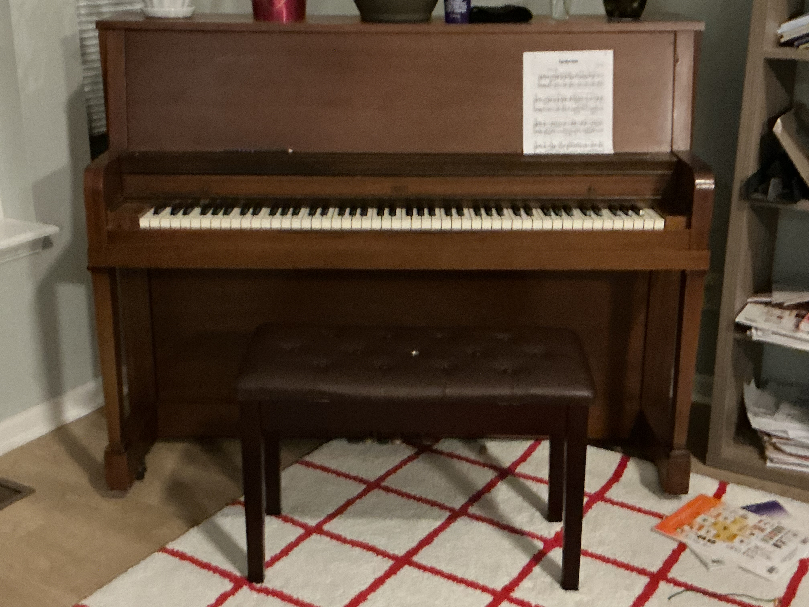

Favorite Movies/Music

Nezha 2
Odyssey

Rachmaninoff Piano Concerto No.3
I grew up here in Fishers for most of my life while moving from Brownsburg at 3 years old.
My parents are from Fujian province in China with my mom coming here at 8 and my dad later
when he was a teenager. Not that much history other than that for the meantime since I just went
to school and lived life.
| Number (Duration) | Hobby | Description |
|---|---|---|
| 1 Hr Daily | Piano | I take private lessons every Tuesday and compete in competitions during the spring |
| Cubing | This is just solving the rubics cube quickly and I did this a lot more a couple of years ago, learning many algorithms among other things. The best I could do was probbaly 30 secs. |
|
| 45 Min Daily | YouTube | Sometimes, I help my brother with his YouTube channel by playing music in the background or preparing scripts. |
| 10 Min Daily | Chess | I'm probably 200-ish elo but I barely play on chess.com and don't take the game to seriously. |
| 2 Hrs Weekly | TFT | Team Fight Tactics - I am not too interested in the game but I find it fun to play every once in a while. Also, new update came out a few days ago. |
Nezha 2
Odyssey
Rachmaninoff Piano Concerto No.3


Heimler's History APUSH Unit 1

TedEd Riddle

Oversimplified American Revolution

Building My Own Ecosystem

WIRED Talks